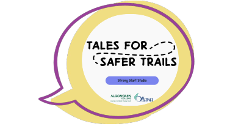
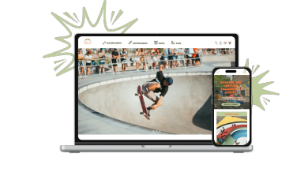
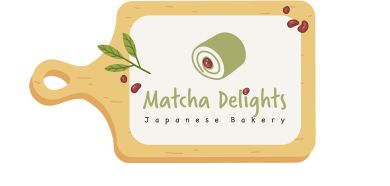
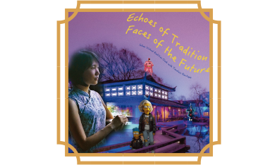
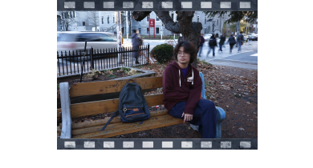

Hello, I’m Xinyan Chen
A Product Designer bridging 5 years of spatial and aesthetic expertise with North American product design— merging pop culture and East Asian aesthetics with rigorous logic to create culturally resonant digital experiences.
More About Me
Tales For Safer Trails
Substance Use Health Campaign
Collaborating with Ottawa Public Health (OPH) to develop educational tools for parenting young children under 12-year-old.
Project Type: UX Research & Visual Storytelling Role: Team Lead & Creative Strategist
View case study
Scotties
Skating and Skiing Shop Redesign
A local ski, snowboard, and skate shop in Whitby, Ontario,where I redesigned the website to highlight its community spirit and passion for snow and skate culture.
Project Type: Media Planning / Web Redesign Role: Project Administrator & UX/UI Designer
View case study
Matcha Delight
A Japanese Bakery Design
Specializing in matcha-flavored pastries, where I designed the brand identity and website to create a fun and user-friendly experience.
Project Type: Branding & Web Design Role: UX/UI Designer & Brand Designer
View case study
Echoes of Tradition, Faces of the Future
DesignSurrealist Poster Design
A surrealist poster envisioning a future where cultural heritage, like Suzhou’s Humble Administrator’s Garden, survives in virtual worlds.
Project Type: Visual Storytelling & Poster Design Role: Graphic Designer
View case study
Youth in Limbo
Photography Story
A visual story of a young man caught between dreams and reality after graduation, exploring themes of uncertainty, solitude, and the search for self-discovery.
Project Type: Photography Series Role: Photographer
View case study